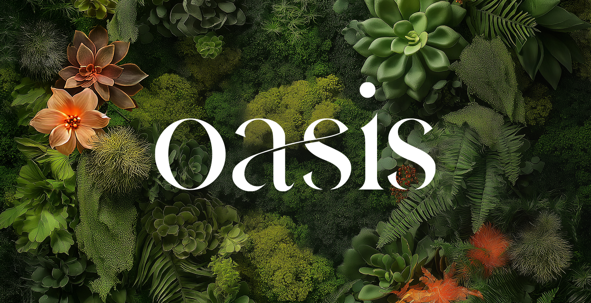

Brand identity for a unique garden restaurant business.

The Challenge
In all honesty, the biggest challenge here was that this was a personal project. Nothing ever feels quite good enough or done, but I've tried to give myself a set of boundaries and parameters so that things don't drag on, even if things don't feel finished.
In my wildest fever dreams I own a business empire. Part of this empire is selling asian-fusion, retail food products like chili crisp, sauces, and marinades. Another part of the empire would be to have several destination brick-and-mortar stores that are part retail, part garden center, part garden, and part restaurant. In this fictitious business you would eat the best food of your life in full view of the most beautiful garden you've ever seen, smelling flowers and hearing the sound of running water. Once you're done, or while you're waiting for a table, you can shop for some of the most amazing home and garden items you've never seen and have to have.
The Name
The name came from how I wanted the destination stores to feel. So often restaurants and garden centers feel like they are optimized for speed and convenience, which from a business perspective makes a lot of sense. You want people to come in quickly, make a purchase, and move on so you can get more people in the door.
This business would be different. It would be somewhere that you'd want to come and stay a while. People would come for a day trip to shop and eat, enjoy the gardens, and make memories. It would be refreshing, inspiring, and different. It would feel like… an oasis. Refreshing water and gardens in the middle of a desert.
The Typography
The typography needed to be clean but creative. I wanted it to have an element that would align with the garden theme, so this font was perfect with its modern ligature connecting certain letters like a vine. It's readable and soft and allows for a contrast depending on the case you use. Lowercase feels softer and more flowing while the uppercase is more formal and elegant. The font is called Hermione.
The Color Palette
A mix of warm and cool tones echoes the warmth of the food and the coolness and greenery of the gardens. Charcoal and tan add a timeless touch to the palette.
The Logo
The wordmark is meant to stand on its own, but can be paired with organic illustrative touches like I've added below it. I've added orange slices to the logo intentionally because I live in a cold climate where citrus doesn't grow naturally. The oranges represent warmth and refreshing that normally doesn't exist here.
The wordmark can scale down to just the "O" when needed, then "Oasis" in its normal state, then with illustrative touches in more creative or expressive moments.